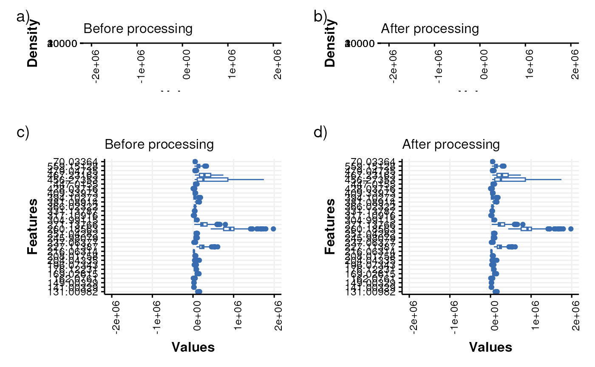

Histograms and boxplots computed across samples and features are used to visually compare two datasets e.g. before and after filtering and/or normalisation.
Value
A
compare_dist
object. This object has no output slots.
See chart_plot in the struct package to plot this chart object.
Inheritance
A compare_dist object inherits the following struct classes: [compare_dist] >> [chart] >> [struct_class]
Examples
M = compare_dist(
factor_name = "V1")
D1=MTBLS79_DatasetExperiment(filtered=FALSE)
D2=MTBLS79_DatasetExperiment(filtered=TRUE)
C = compare_dist(factor_name='Class')
chart_plot(C,D1,D2)
#> Warning: Removed 109 rows containing non-finite outside the scale range
#> (`stat_boxplot()`).
#> Warning: Removed 109 rows containing non-finite outside the scale range
#> (`stat_boxplot()`).
#> Warning: Removed 8012 rows containing non-finite outside the scale range (`stat_bin()`).
#> Warning: Removed 8012 rows containing non-finite outside the scale range (`stat_bin()`).
#> Warning: Removed 10623 rows containing non-finite outside the scale range
#> (`stat_bin()`).
#> Warning: Removed 6 rows containing missing values or values outside the scale range
#> (`geom_path()`).
#> Warning: Removed 10623 rows containing non-finite outside the scale range
#> (`stat_bin()`).
#> Warning: Removed 6 rows containing missing values or values outside the scale range
#> (`geom_path()`).
#> Warning: Removed 109 rows containing non-finite outside the scale range
#> (`stat_boxplot()`).
#> Warning: Removed 109 rows containing non-finite outside the scale range
#> (`stat_boxplot()`).

#> TableGrob (4 x 2) "arrange": 4 grobs
#> z cells name grob
#> 1 1 (1-1,1-1) arrange gtable[layout]
#> 2 2 (1-1,2-2) arrange gtable[layout]
#> 3 3 (2-4,1-1) arrange gtable[layout]
#> 4 4 (2-4,2-2) arrange gtable[layout]